Espacio Doble AA: “Anexos Artísticos y Más” es un espacio dinámico de residencias , producción, exhibición y discusión de propuestas culturales y artísticas multidisciplinarias. A partir de la inclusión de distintas propuestas "Espacio Doble A" propone desarrollar los diferentes puntos de interés de los participantes, residentes (anexados), buscando dar difusión y visibilidad sobre los procesos de exploración, producción, investigación y documentación propios de la obra de cada artista o proyecto residente. Gracias a la participación de distintxs agentes que colaboran en él, Espacio Doble A se posiciona como un espacio plural que busca el desarrollo de la cultura y las artes, así como la problematización de éstas, en el Valle de Toluca. Espacio Doble AA: “Anexos Artísticos y Más” toma como referencia las dinámicas de trabajo, diálogo, y repartición de labores que se llevan a cabo comúnmente en la sociedad de Alcohólicos Anónimos.
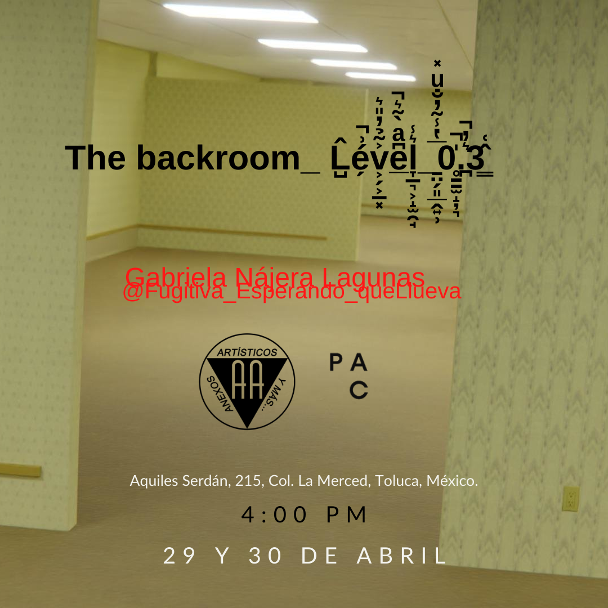Inspirada en la publicación de 4chan publicada en el año 2019, the backroom apareció cómo un hilo donde se mencionaba pesadillas que mucha gente ha tenido en la cual las personas se encuentran encerradas en algún tipo de bodega o cuarto totalmente vacío y únicamente iluminado por lámparas fluorescentes, puede parecer un lugar sin salida, como un laberinto lleno de más cuartos iguales, con un olor a humedad; las personas que sueñan con esto, buscan desesperadamente una salida del lugar pero no logran encontrarla hasta despertar, desde entonces la comunidad se dedicó a especular sobre la existencia de las puertas hacia otro lugar, la construcción de imaginarios a través de esta estética se ha llevado a videojuegos como minecraft y roblox. Está es mi contribución a aquella pesadilla colectiva que lleva tres años circulando en internet, con esta pieza alimentó la leyenda de alguna vez haber estado en este sitio antes.
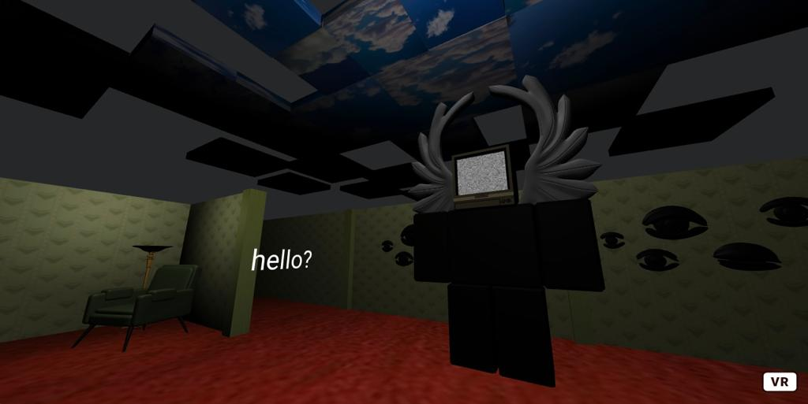The Backroom Level 3 es el resultado de la residencia y esta programado en A-Frame que es un framework web de código abierto para crear experiencias de realidad virtual. Es mantenido por desarrolladores de Supermedium, Google y la comunidad WebVR.
Retribución social Taller: Web Creativa Abrimos un taller gratuito y presencial dirigido a entusiastxs de la programación, artistxs, artistxs digitales, curiosxs y público en general interesado en el desarrollo de páginas en internet. El objetivo fue introducir a lxs participantes en la creación de páginas de internet de una forma creativa, las cuales subirán en línea para crear un repositorio con sus ejemplos experimentando con el uso de códigos preestablecidos en html que pueden implementar para distintos fines.
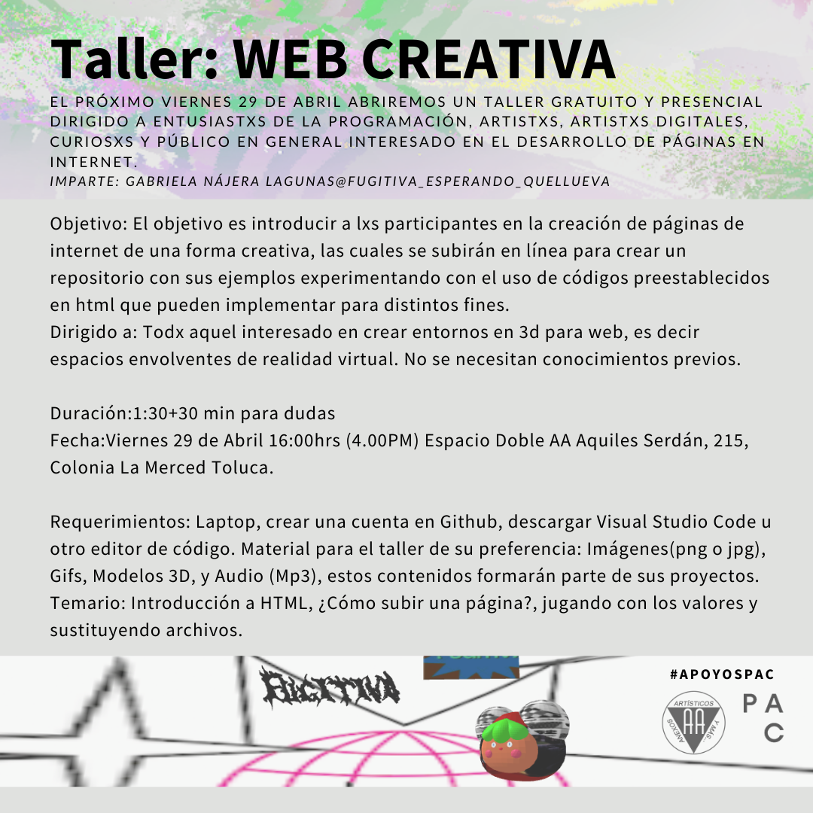El Taller fue realizado en el Espacio Doble AA donde se desarrollo
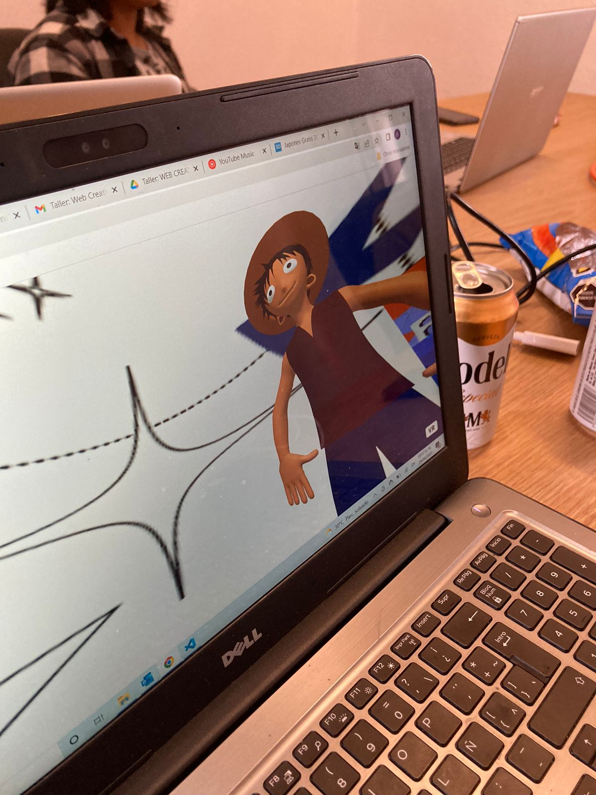 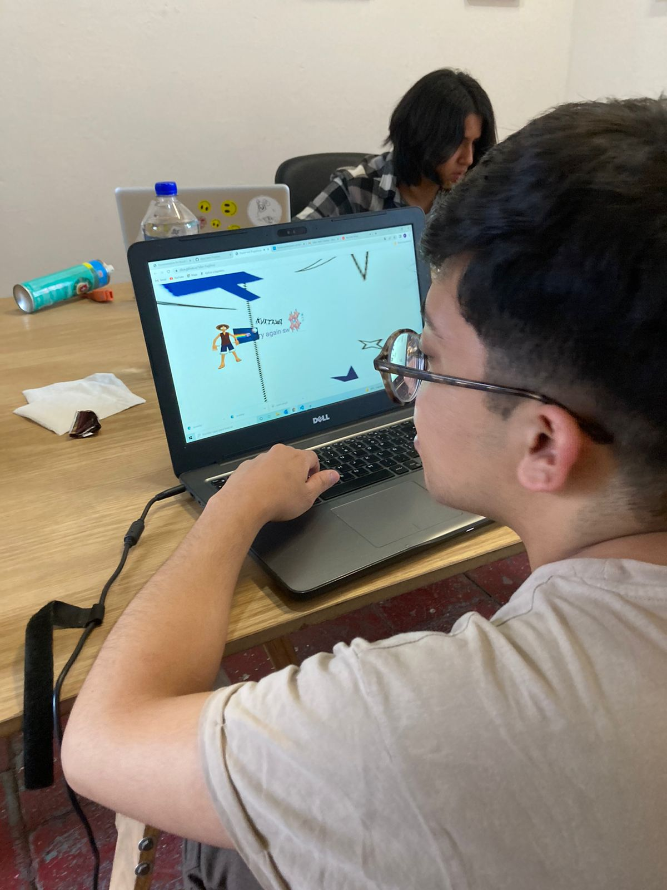 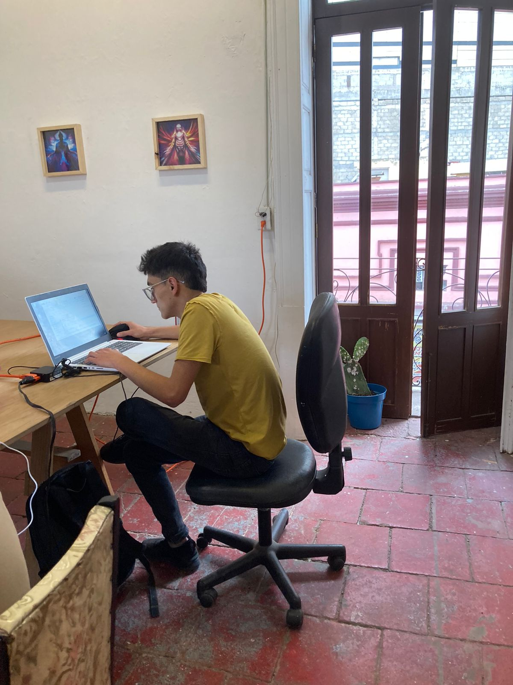 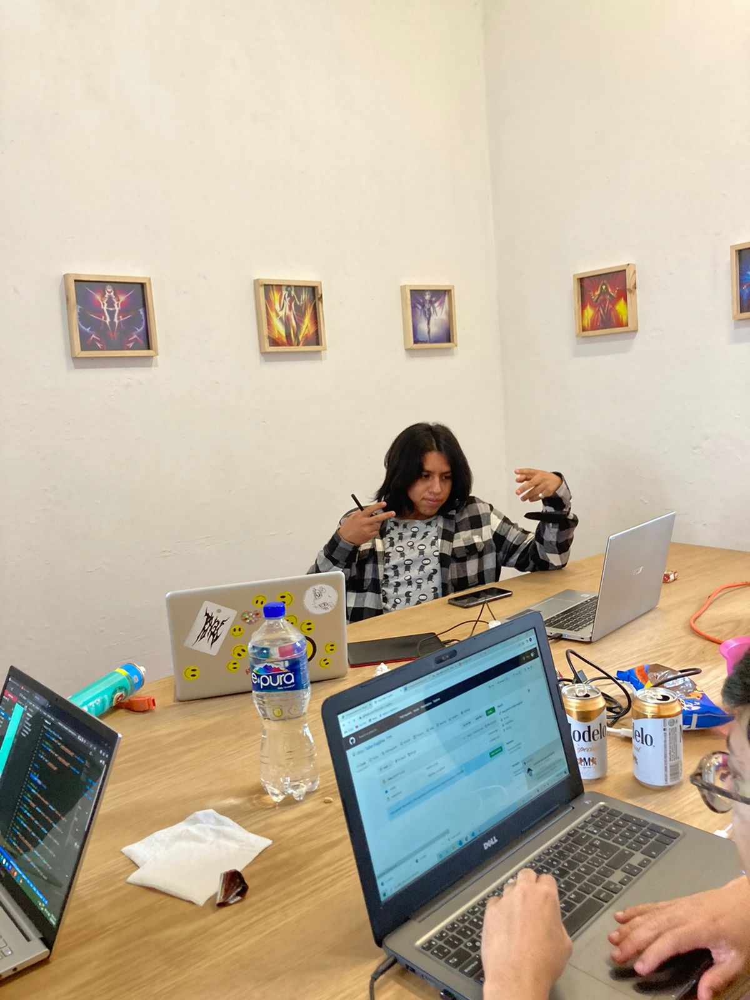 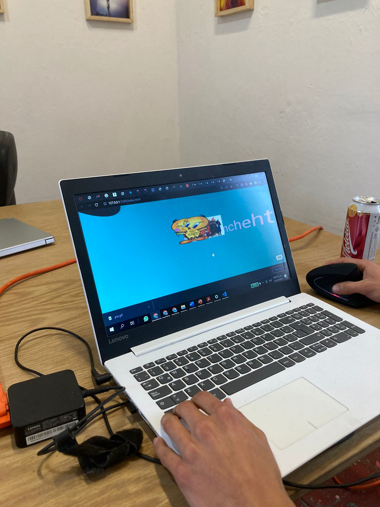 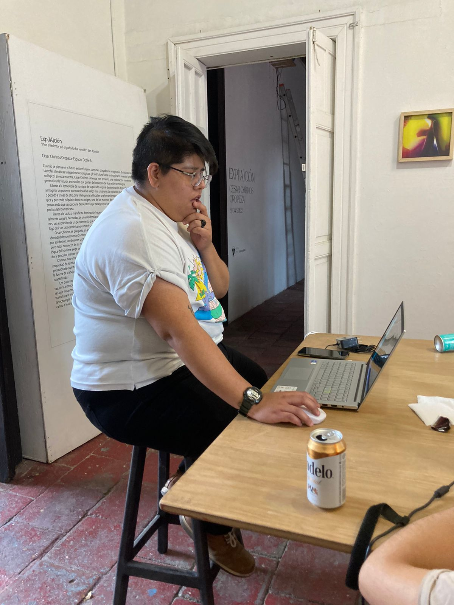Resultados del taller en Github repositorios

 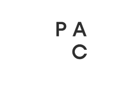
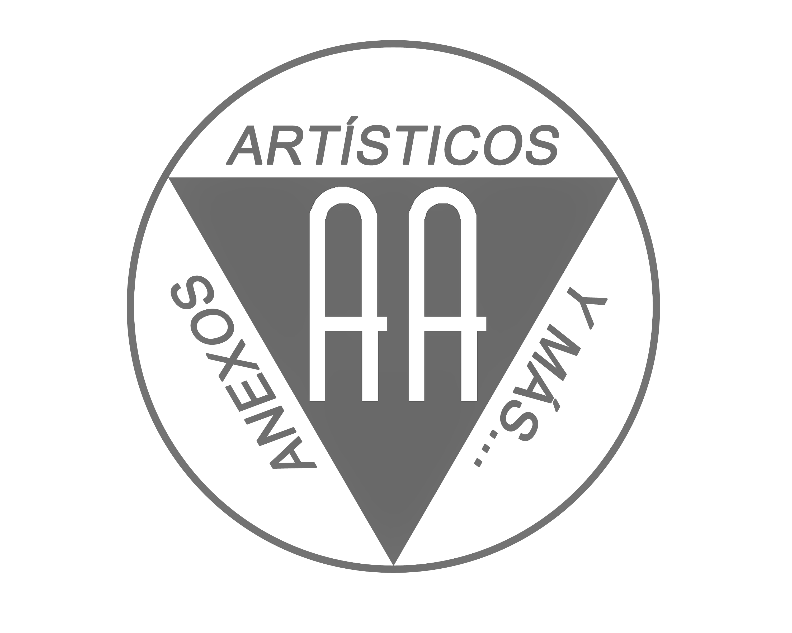
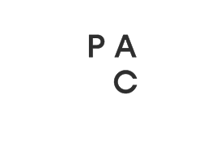
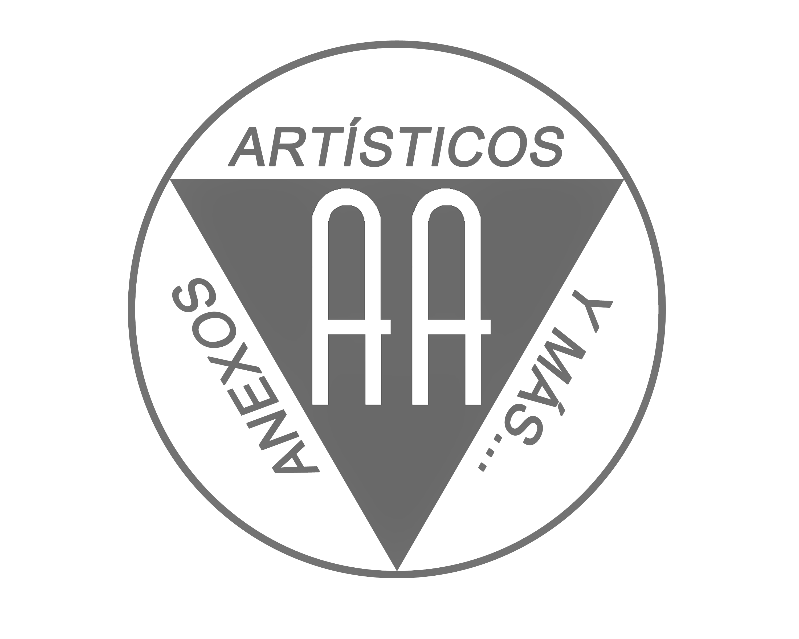